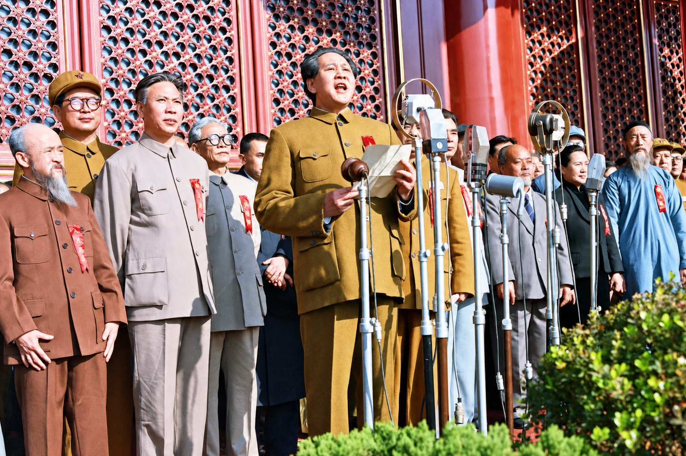
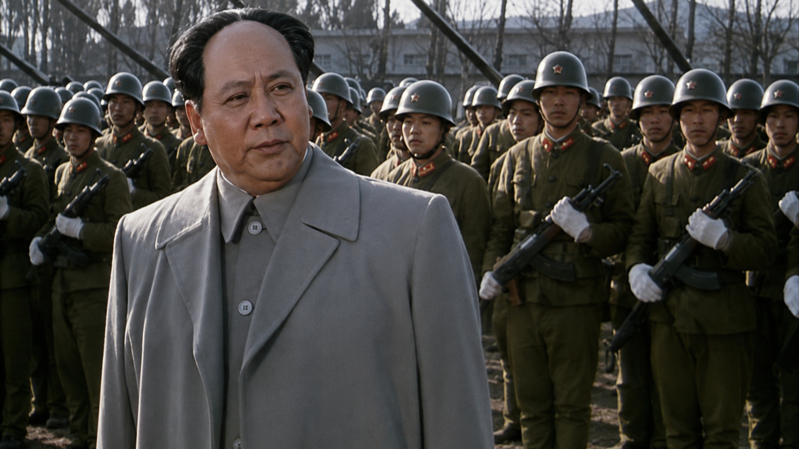
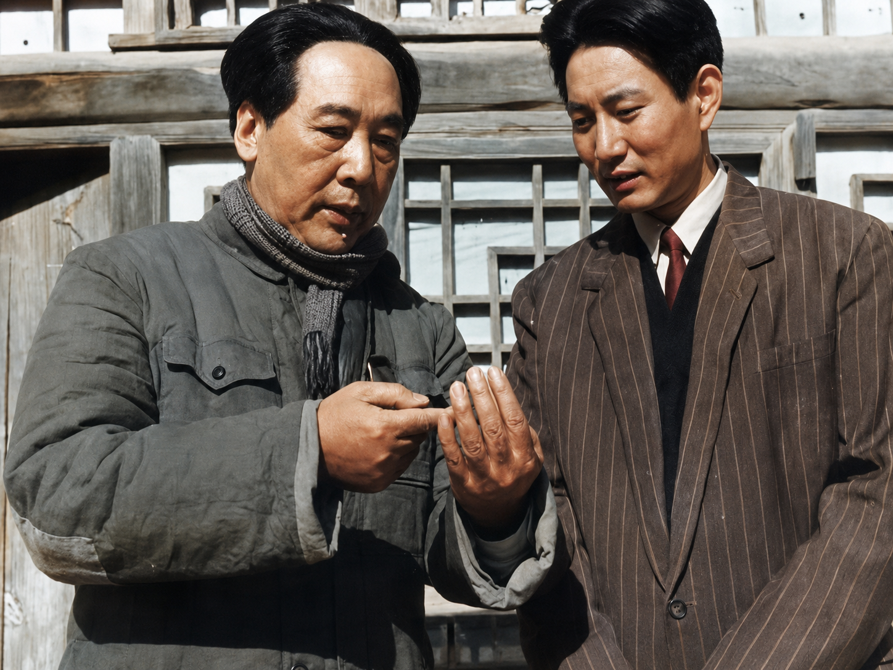
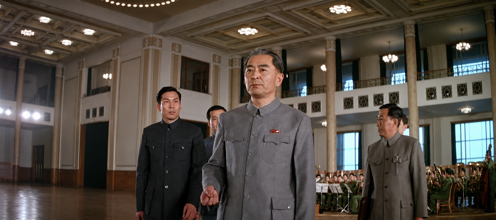
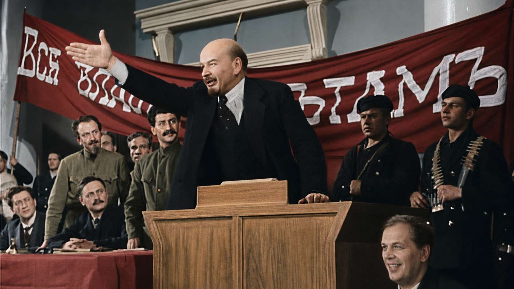
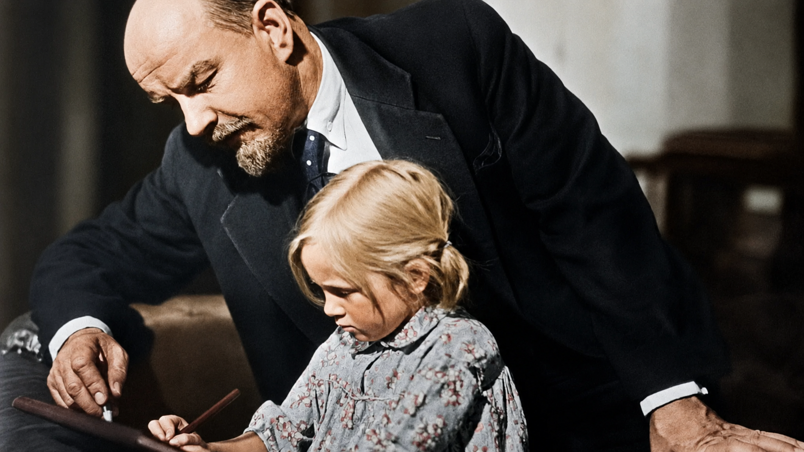

开国大典
“中华人民共和国中央人民政府，已于本日成立了！”
领袖 · 人民 · 英雄

“中华人民共和国中央人民政府，已于本日成立了！”

“看看子弟兵好啊，先到部队去。”

“唉，战争嘛，总要有伤亡，没得关系，谁让他是我毛泽东的儿子”

“延安的生活为什么还这么苦，我当总理，我有责任。”

“布尔什维克的同志们一向所说必须要进行的这个工农革命，实现了！”

“我们让资产阶级们去发疯吧，让那些无价值的灵魂去哭泣吧！”